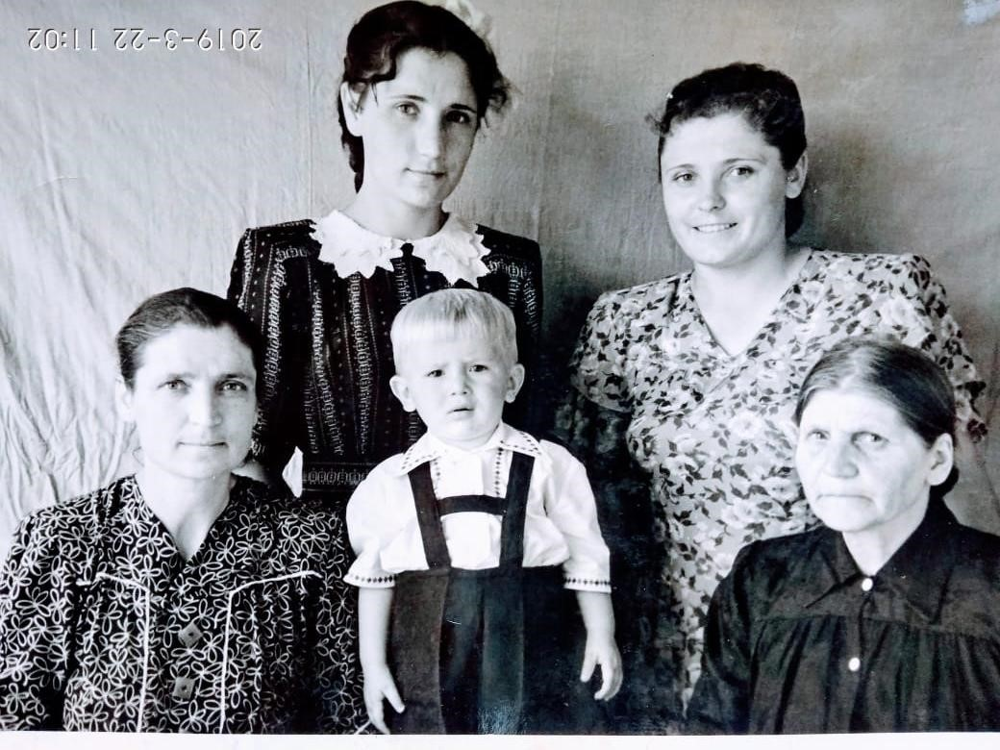

Сербинова (Ковачева) Анастасия Михайловна
Родилась: 15.11.1886, с. Зеленое (с. Зеленовка)
Умерла: 19.05.1970, г. Копейск
Продолжительность жизни: 83
Место жительства: с. Зеленое (с. Зеленовка)
Дата рождения с памятника. Дата, указанная в актовой записи о рождении сына Георгия: https://www.familysearch.org/ark:/61903/3:1:3Q9M-CS9L-49V7-8?i=331&cat=1405206 скорее всего не верна - в записях за 1887 год запись о рождении отсутствует. Записи за 1886 год не представлены.
Муж: Сербинов Степан Федорович
Дочь: Сербинова Мария Степановна
Сын: Сербинов Георгий Степанович
Дочь: Станчевская (Сербинова) Доминикия Степановна
Дочь: Турлакова (Сербинова) Акулина Степановна
Сын: Сербинов Василий Степанович
Сын: Сербинов Иван Степанович
Сын: Сербинов Александр Степанович
Дочь: Мокина (Сербинова) Елена Степановна
Сын: Сербинов Федор Степанович
Сын: Сербинов Георгий Степанович
Дочь: (Сербинова) Мария Степановна
Дочь: Салтовская (Сербинова) Анна Степановна
 Анастасия Михайловна 03041887. Анастасия Михайловна 03041887. Вверху - Валентина Ильинична и Мария Степановна Сербинова, внизу - тетя Калина и бабушка Настя, между ними Машин сын Виктор. |